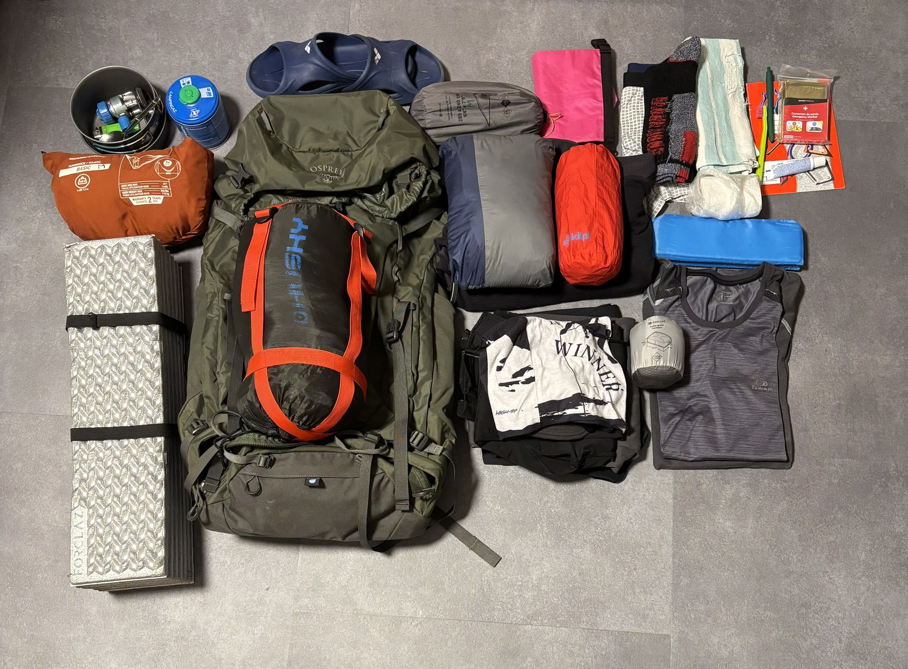
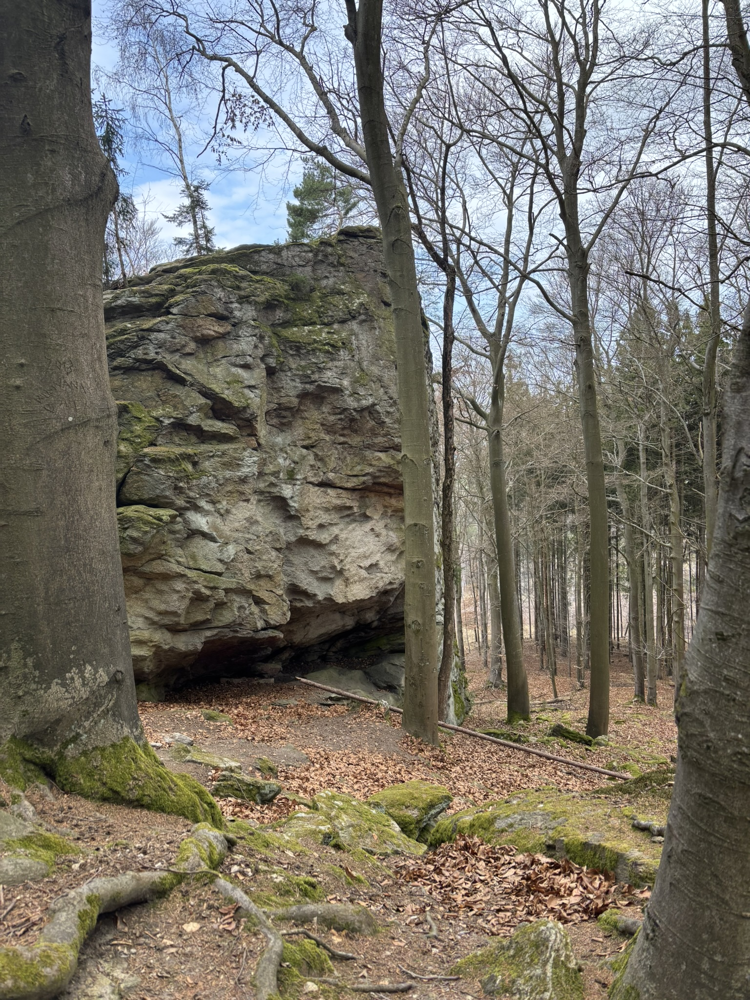
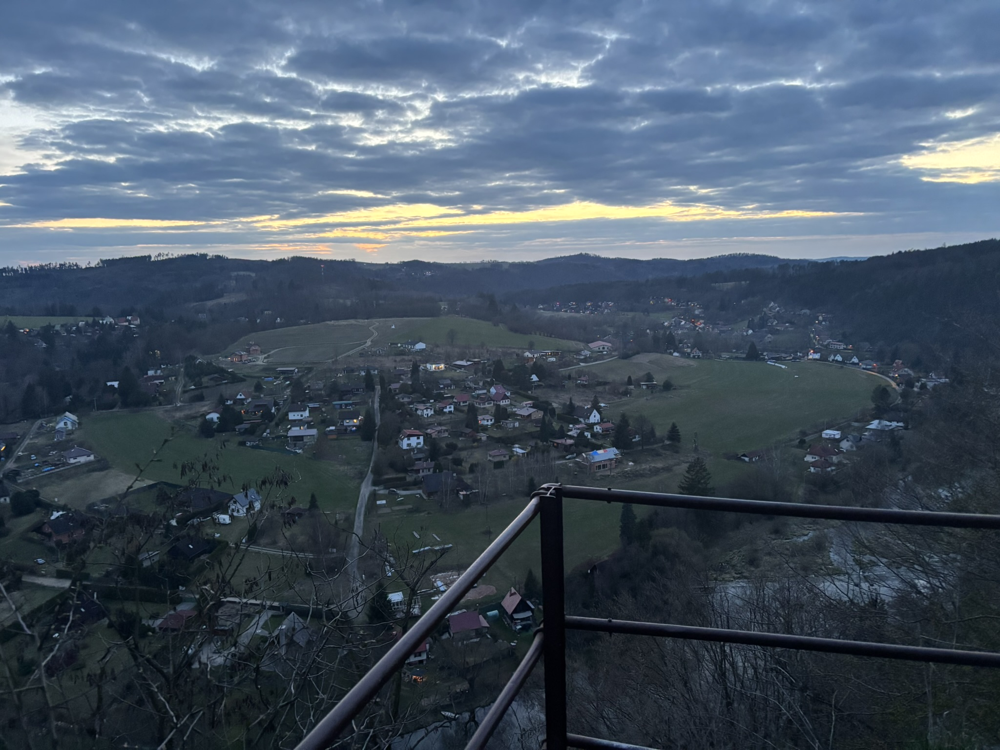
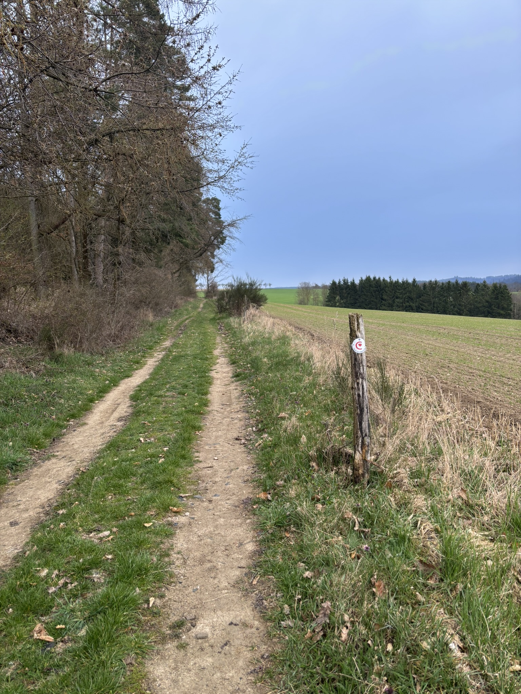
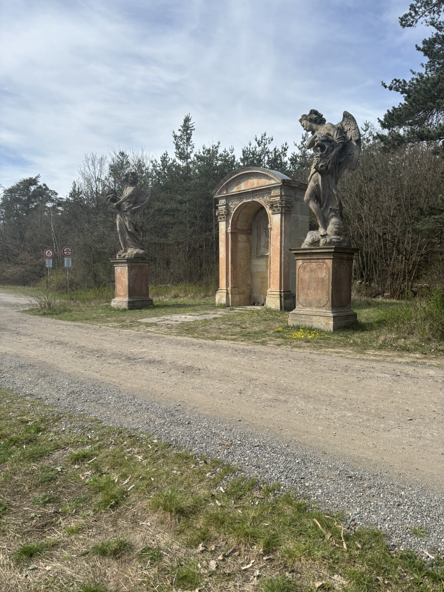
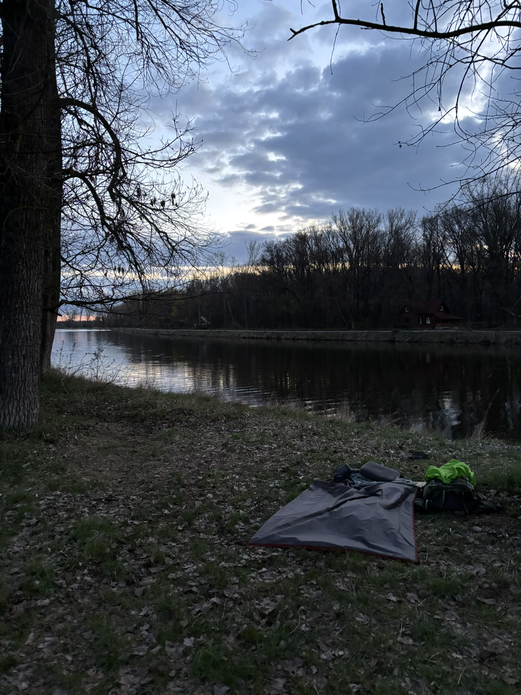
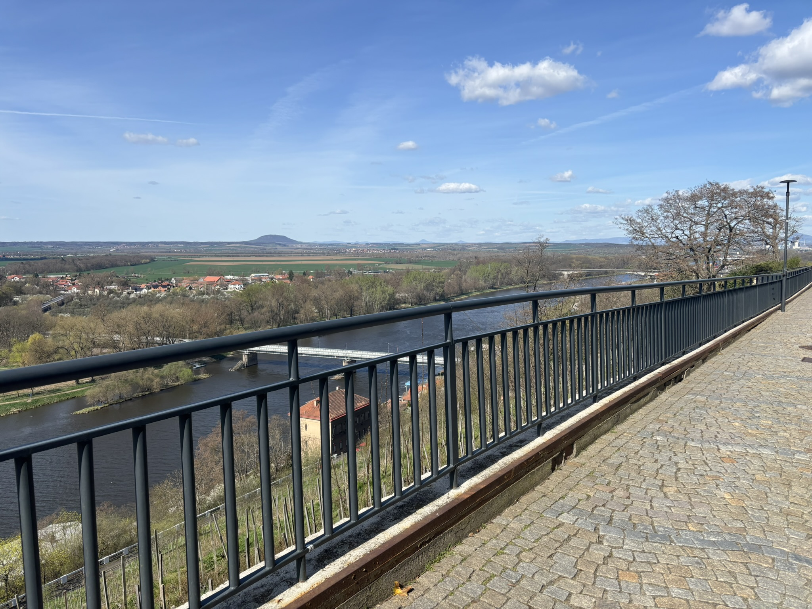
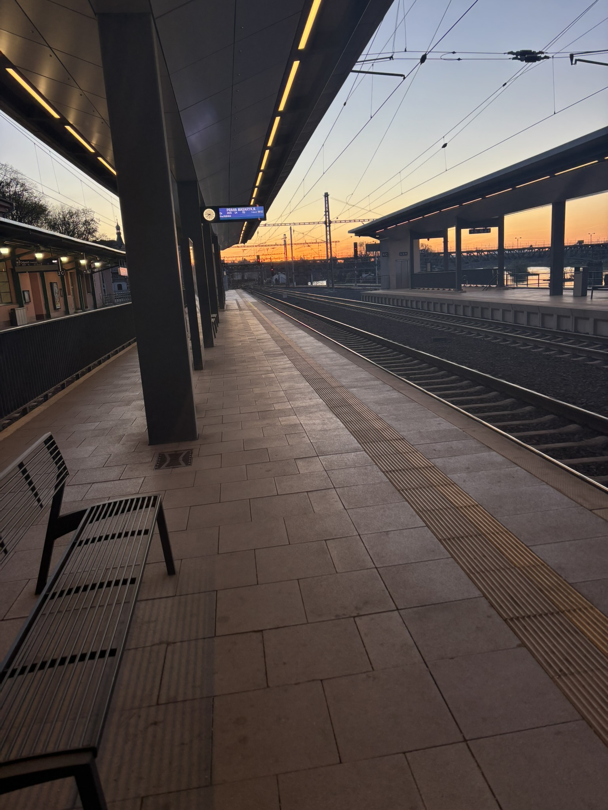

Už delší dobu se chci vydat na Stezku Českem, ale až tento rok jsem si fakt řekl, že do toho půjdu. No jo, ale já už jsem na dlouhým hiku nebyl tak 2 roky. A tak vznikl nápad někam vyjít na vícedenní hike. Jsem ještě student, takže přes semestr to moc nejde. V tom mě to napadlo, že půjdu přes Velikonoce. Vznikl tak prodloužený víkend, asi od pátku do pondělí. To byl jeden problém vyřešen, nastal další. Kam? První nápad padl pro Slovensko (Nízké Tatry/Malé Karpaty). Byl jsem natěšenej, že mě to napadlo tak rychle. Pak jsem se podíval na kameru, tam jsem narazil na problém – hooodně sněhu. Proto jsem se "přemístil" zpět do ČR. Nechtěl jsem jít ani část Stezky, abych to nemusel jít dvakrát. Potom jsem narazil na blog, kde bylo pár hiků. Nejvíc mě zaujala právě Poutní cesta z Blaníku na Říp. Dám za pravdu, moc jsem si nezjišťoval. Jen jsem si vypočítal, jestli vyjde kilometráž. Bylo to tak tak, ale nakonec padlo final rozhodnutí, že ano (našim jsem řekl o 20 km míň). Sbalil jsem si svých pět švestek a vyrazil jsem.

Na start oklikou přes půl republiky
Cesta na start byla zajímavá sama o sobě. Začínal jsem na Blaníku, hlavně proto abych měl jednodušší cestu zpátky. Nějak jsem tušil, že budu unavenej. Budíček jsem si nastavil na 4:15 a už jsem věděl, že to bude dlooouhý den. V 5:40 jsem sedl v Brně na vlak do Kolína, ano do Kolína. Klasický zpoždění nesmělo chybět, ale bus do Vlašimi jsem stihl. Jelikož jsem jel většinu cesty sám, tak řidič to vzal na pohodu. Pokec se sousedem, zastávka na malou a pro kafe. Mně to fakt nevadilo, protože na přestup do Louňovic jsem čekal hoďku. Na start jsem dorazil 11:30, nezdržoval se a vyrazil. Startovali se mnou 2 lidi, ale ti šli jednodenní výlet.
Ve stínu Blanických rytířů
A hnedka na Blaník. Bylo to opravdu mrtě prudký, ale stihnul jsem se podívat i na Veřejovu skálu z pověsti. Po Blaníku ubylo hodně lidí, což mám rád, byl klid a já jsem jen šel a užíval si výhledy. Nejlepší asi byly za Kondrací, na Blaník, a to počasí do toho, prostě bomba. Cesta utíkala, ale celou dobu jsem byl v časovým presu, měl jsem daný bod na spaní, tak jsem se do toho snažil šlápnout, zpětně to vidím zbytečně moc rychlý.

Pak jsem poprvé překročil dálnici a vydal se na hrad, který byl v rekonstrukci. V Českým Štenberku jsem si sedl na lavičku a nohy už fakt bolely. Z 5 min pauzy bylo 15, nevím, jak se to stalo. Začínalo zapadat sluníčko a já jsem byl trochu víc v nervech. Došel jsem úspěšně za Rataje na vyhlídku (zacházka kousek od trasy). Tak to byl boží výhled na Sázavu. Krásný zakončení dne s výhledem, tortillou a tuňákem. Ano byl jsem ticho, aby na mě nepřišli z domku, který byl kousek vedle, naštěstí v poho.

Když to nejde podle plánu
Ráno jsem hnedka vyrazil, protože foukalo a byl jsem trošku promrzlej z noci, tak jsem se chtěl zahřát. Nestihl jsem ani rozhýbat ztuhlý tělo a začalo pršet, takže batoh dolů -> vytáhnout bundu -> batoh nahoru -> pokračovat. Po pár km jsem dal snídani, přestalo pršet a valil jsem dál. Dopo jsem prošel Sázavu a vyšlápl hustě prudkej kopec. Strašně foukalo, tak jsem si dal oběd na zastávce, aby na mě nefoukalo. Před Kouřimí jsem potkal týpka, co šel opačným směrem. V Kouřimi byla nějaká pouť, ale nohy celkem tahaly, takže jsem dal nějakou sváču a pokračoval jsem. Tak jsem šel cestou necestou a najednou obrovský liják, naštěstí jen přeháňka. Zajímavou zprávu jsem zjistil. A to že cesta, kterou jsem si vyklikal, tak není ta cesta podle webu … jejda no nic. Byl jsem naštvanej, i když jsem si to vlastně udělal sám. Přenastavil jsem trasu a dal se na cestu. Nádhernou alejí jsem se dostal přes druhou dálnici, za kterou jsem to zapíchl. Dneska jsem si večeři už uvařil, abych se pořádně najedl.

Nekonečné roviny a první větší krize
Tak ten východ slunce fakt stál za to. Posbíral jsem si věci, zmrzlý a rozlámaný tělo a vydal jsem se do Sadské. Dnes jsem chtěl jít více na pohodu, celkem jsem to pořád hrotil. Po dvou dnech se terén rovinatí, dalších 80 km je převýšení téměř nulové, na druhou stranu je znát zátěž z předchozích dnů. Taky začínají úseky, kam nevidím na konec. Musím věřit, že tak daleko nevidím, a že ta cesta tam je. Sluníčko celkem pere na vyprahlých polích. A tak si přemýšlím: „Ty lesy a kopce jsou náročný, ale lepší než nekonečný rovinky.“ Voda už docházela, tak jsem si napustil minerální pramen, asi ta voda je dobrá pro tělo, ale mně fakt nechutná. Po pár kilometrech si začínám zvykat. Poprvé na hiku jsem šel do krátkýho rukávu a nohávu, což byla fakt velká úleva. Odpo jsem dorazil za Čelákovice, k soše sv. Václava.

Tady byla pauza must-have, už bylo mega vedro, ale co pauza nespraví, že? Byl jsem unavenej po celým dni (a těch předchozích), takže po přejití poslední dálnice ve Staré Boleslavi padly nějaký kalorie navíc (nej rozhodnutí celýho dne). Tady jsem už věděl, že to do tmy nestihnu. Tak jsem se v Kostelci na náměstí rozhodl uvařit večeři. Těch pár lidí, co tam prošlo, se na mě dívalo, jak kdybych přistál z Marsu (zpětně je úplně chápu). Odešel jsem na camp-spot až po setmění. Na chvilku sprchlo, ale jen trochu, takže dobrý. Když jsem přicházel na místo, slyšel jsem ožralý týpky (hoodně hlasitý) přesně tam, kde měl být přístřešek. Pak jsem uslyšel jen start motorů a odjeli. Najednou takový ticho. Plácl jsem sebou hnedka vedle řeky. Trochu foukalo, ale říkal jsem si, že pohoda.
Vyfučená hlava, cíl na dohled
Poslední noc by už měla být pohoda, ne? No ani hovno. Nejhorší noc na hiku ever. Vítr se stal největší nepřátel. Probouzel jsem se během noci celkem dost. Kolem druhé ráno jsem klepal takovou kosu, a tak moc foukalo, že jsem vzal tarp a připevnil si ho přes nohy jako další vrstvu, fakt to pomohlo. Btw zmínil jsem, že jsem pod karimatkou měl ještě karton, který jsem našel? Taky jsem chtěl zmínit … hezký Velikonoční pondělí.

Na znovu promrzlý tělo jsem navlíkl všechny vrstvy, který jsem měl a valil do Neratovic na snídaní s krásným výhledem u řeky. Po Neratovicích mě to ale čekalo. 2 km dlouhá, rovná asfaltka, tak jsem se snažil moc nad tím nepřemýšlet. Pak jsem začal potkávat první koledníky. První kopec po těch 80 km, co by tak mohl skrývat? Pro to jsem si musel vylézt až nahoru. A byla konečně tam … hora Říp, po tolika kilácích jsem už viděl cíl, ale pořád byl strašně daleko.

Za Mělníkem začala pořádná zkouška ohněm. Prostě jsem šel rovně, když jsem se díval nakonec, tak se kraje cesty spojovaly dohromady. Musel jsem poprosit o vodu, protože bez ní by to nešlo. Rovinka není nejhorší, do toho byl extrémní vítr, který mě totálně vysával. Kšiltovku dopředu, buff přeš uši, ruce do kapes, aby se nespálily a šlo se. Konečně tam na mě čekal les a jak skončil, tak se přede mnou otevřel Říp, ten byl ooobrovskej (nikdy před tím jsem nebyl nahoře, ani poblíž). Ten výstup nahoru byl strašně prudkej, to byl extrém, a ještě s tím batohem, ale i tak jsem předešel pár lidí. Nahoře jsem se těšil na výhled, ale nic. Tak jsem se aspoň prošel kolem rotundy a pokračoval do Roudnice na vlak. Přicházel jsem jako kdybych nemohl (nevím proč?). Hodil jsem do sebe bagetu a bonbony z automatu a šel jsem čekat na vlak. Nejlepší západ slunce byl v Roudnici na nádraží. Kdo by to řekl? Cestou domů jsem se dost najedl, dá se říct, zbytky a nákup v Praze na hlaváku.

Stojí to vůbec za to?
I když bych udělal tisíc věcí jinak, tak jsem si to ve svým smyslu i užil. Překonal jsem dost těžkých situací, který mě posunou jako hikera. Tuto trasu bych doporučil na těch 5-6 dní, to by mohlo být fajn, ale ty 4 byly opravdu hard. Samozřejmě jsem si mohl víc nastudovat trasu, roztáhnout trasu na 5 dní, zjistit si o této trase různý info, a tak dále. Ale na druhou stranu jsem našel, co jsem hledal … klid. Trochu vypnout od školy a soustředit se na jiný věci. Taky mám několik typů na Stezku, který jsem taky hledal. Prostě někdy musím vystoupit ze svý komfortní zóny, abych něco zjistil. Já jsem si to vyzkoušel tou těžší cestou, ale tak to mám, a to jsem já.